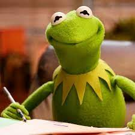

Kermit
Kermit, or 'The Boss Frog,' as he sometimes known, is the center and organizing force of the Muppet family. He is the head reporter for The Muppet News. He is the much-harried stage manager of The Muppet Show. He is a central character in most muppet movies, including the best holiday movie of all time: The Muppet Christmas Carol. Last but not least, he is also the reluctant paramore of Miss Piggy.
